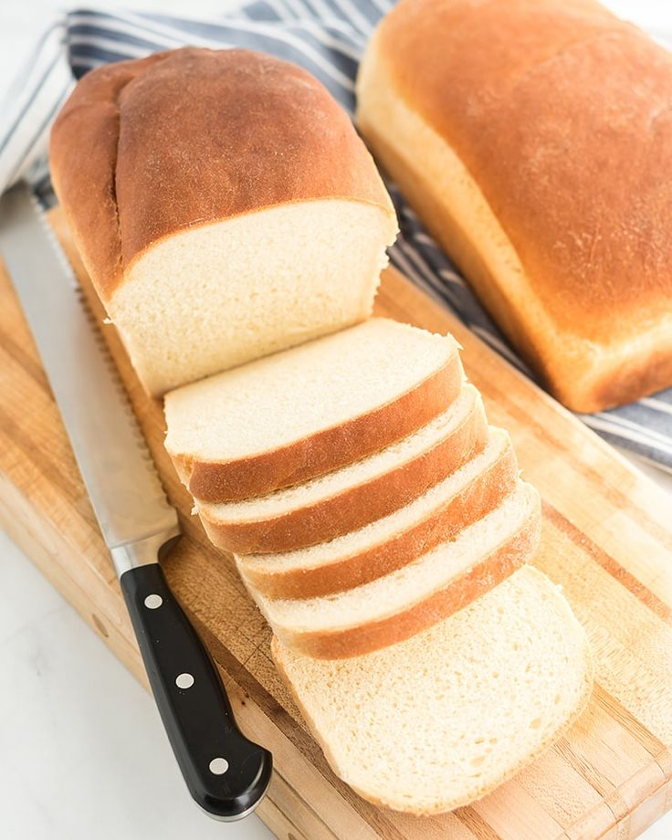

White Bread Recipe:

What is a White Bread?
White bread is a type of bread made from refined wheat flour, which gives it a light color and soft texture. It has a mild, slightly sweet flavor and is often enriched with vitamins and minerals. Common varieties include sandwich bread, baguettes, and rolls. Unlike whole-grain bread, white bread lacks the bran and germ, making it less fibrous but smoother and fluffier. It's widely used for toast, sandwiches, and snacks.
Ingredients:
- 3 cups warm water
- 3 tablespoons active dry yeast
- 3 teaspoons salt
- 4 tablespoons vegetable oil
- ½ cup white sugar
- 8 cups bread flour
Steps:
- In a large bowl, combine warm water, yeast, salt, oil, sugar, and 4 cups flour. Mix thoroughly, and let sponge rise until doubled in size.
- Gradually add about 4 cups flour, kneading until smooth. Place dough in a greased bowl, and turn several times to coat. Cover with a damp cloth. Allow to rise until doubled.
- Punch down the dough, let it rest a few minutes. Divide dough into three equal parts. Shape into loaves, and place in three 8 1/2 x 4 1/2 inch greased bread pans. Let rise until almost doubled.
- Bake at 350 degrees F (175 degrees C) for 35 to 45 minutes. The loaves may need to be covered for the last few minutes with foil to prevent excess browning.
Home